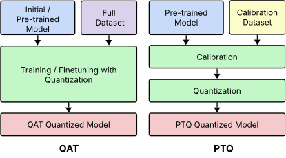

This survey provides a hardware-oriented perspective on neural network quantization, systematically reviewing the quantization methods most relevant to MCUs and extreme-edge devices.
The deployment of quantized neural networks on resource-constrained edge devices, such as microcontrollers (MCUs), introduces fundamental challenges in balancing model performance, computational complexity, and memory constraints. Tiny Machine Learning (TinyML) addresses these issues by jointly advancing machine learning algorithms, hardware architectures, and software optimization techniques to enable deep neural network inference on embedded systems. This survey provides a hardware-oriented perspective on neural network quantization, systematically reviewing the quantization methods most relevant to MCUs and extreme-edge devices. Particular emphasis is placed on the critical trade-offs between model performance and the capabilities of MCU-class hardware, including memory hierarchies, numerical representations, and accelerator support. The survey further reviews contemporary MCU hardware platforms, including ARM-based and RISC-V-based designs, as well as MCUs integrating neural processing units (NPUs) for low-precision inference, together with the supporting software stacks. In addition, we analyze real-world deployments of quantized models on MCUs and consolidate the application domains in which such systems are used. Finally, we discuss open challenges and outline promising future directions toward scalable, energy-efficient, and sustainable AI deployment on edge devices.
Index Terms—Embedded Systems, Microcontrollers (MCUs), Neural Processing Units (NPUs), Edge Computing, Quantization, Reduced Precision, Deep Learning, TinyML, Sustainable AI
Deep Neural Networks (DNNs) have achieved state-of-the-art performance across various domains including image classification
At the same time, the rapid growth of the Internet of Things (IoT) has significantly increased interest in resource-constrained embedded devices, particularly microcontroller units (MCUs). These MCUs are popular due to their low power requirements, high reliability, and ease of integration into diverse applications
Deploying complex DNNs on MCUs poses considerable challenges. Unlike graphics processing units (GPUs) or application-specific integrated circuit (ASIC) accelerators, MCUs typically operate within strict constraints: limited on-chip memory (often just hundreds of kilobytes), minimal computational resources, low clock speeds (typically 40 to 400 MHz), and stringent power budgets (in the order of milliwatts)
| Paper | Year | Primary Quantization | Advanced Quantization | Numeric Representations | Hardware Landscape | Software Frameworks | Applications |
|---|---|---|---|---|---|---|---|
| Gholami et al. | 2022 | ✓ | ✓ | ✓ ✓ | |||
| Orășan et al. | 2022 | ✓ | ✓ | ✓ | |||
| Giordano et al. | 2022 | ✓ ✓ ✓ | |||||
| Saha et al. | 2022 | ✓ | ✓ | ✓ | ✓ | ||
| Ray | 2022 | ✓ | ✓ | ✓ ✓ | ✓ | ✓ | |
| Rokh et al. | 2023 | ✓ | ✓ | ||||
| Akkad et al. | 2023 | ✓ | ✓ | ||||
| Liu et al. | 2024 | ✓ | ✓ | ✓ | |||
| Liu et al. | 2024 | ✓ | |||||
| Capogrosso et al. | 2024 | ✓ | ✓ ✓ | ✓ | |||
| Liu et al. | 2025 | ✓ | ✓ | ✓ | |||
| Heydari and Mahmoud | 2025 | ✓ | |||||
| Wang and Jia | 2025 | ✓ | ✓ | ✓ | ✓ | ||
| Somvanshi et al. | 2025 | ✓ | ✓ | ✓ | ✓ ✓ ✓ | ✓ | ✓ |
| Lê et al. | 2026 | ✓ | ✓ | ✓ | ✓ ✓ | ✓ | ✓ |
| Ours | 2026 | ✓ | ✓ | ✓ | ✓ ✓ ✓ | ✓ | ✓ |
This has led to the emergence of the tiny machine learning (TinyML) paradigm, which enables machine learning (ML) models to run on edge devices with extremely limited compute and memory resources, typically consuming only a few milliwatts or less
To meet the stringent resource constraints of MCUs, model compression has become essential for deploying DNNs on such platforms. These techniques reduce parameter size, computational cost, and memory usage, but often introduce accuracy–efficiency trade-offs. Common strategies include network pruning
Quantization exploits the inherent redundancy in neural networks, allowing models to retain high accuracy under reduced precision
Recent surveys have addressed quantization, model compression, and TinyML deployment from different angles, yet these topics are often treated independently and remain limited in scope. The existing literature can be broadly grouped into three main lines: algorithm-centered quantization surveys
Algorithm-centered surveys, such as those by Liu et al.
Conversely, hardware-centered deployment surveys tend to emphasize platforms and architectures while giving less attention to quantization as a deployment methodology. For instance, Orășan et al.
Broader TinyML and edge-AI surveys provide ecosystem-level overviews, but often lack depth on quantization as a deployment methodology. For example, Saha et al.
Some studies partially bridge hardware and software aspects. For example, Capogrosso et al.
Overall, existing surveys tend to emphasize algorithmic quantization, TinyML hardware, or application domains as separate topics. What remains missing is a deployment-centered synthesis that connects quantization methods with MCU hardware support, software toolchains, numerical representations, and evidence from real-world deployments.
Motivated by this gap, our survey bridges quantization techniques, MCU hardware platforms, and software stacks to enable optimized low-precision inference, with particular attention to ARM- and RISC-V-based devices and NPU-integrated devices. It also addresses a critical yet often overlooked hardware dimension: numerical representations. Furthermore, we provide a consolidated review of diverse application domains in which different quantization methods and hardware platforms have been deployed. This integrated perspective fills a key gap in the existing literature by offering practical, deployment-oriented insights for implementing quantized neural networks (QNNs) on embedded platforms. Table 1 compares our survey with the most relevant prior work across quantization approaches, numerical representations, hardware platforms, software frameworks, and applications.
This survey makes the following key contributions:
The rest of this survey is organized as follows: Section 2 outlines the necessary background on numerical formats and quantization fundamentals. Section 2.2 reviews primary quantization methods. Section 3 discusses advanced quantization techniques. Section 4 explores alternative numerical representations. Section 5 surveys the microcontroller hardware landscape and software deployment stacks. Section 6 presents a comparative analysis of quantized deployment in real-world applications. Section 7 highlights challenges and future directions. Finally, Section 8 concludes the survey. Fig. 1 provides a visual overview of this organization, tracing the survey from quantization preliminaries to deployment, applications, and future directions.
This section establishes the numerical and deployment concepts needed to understand quantization in the MCU setting. Because MCU inference is executed by digital hardware with limited memory and fixed arithmetic resources, every weight, activation, and bias must ultimately be stored and processed using a finite number of bits. The choice of numerical representation therefore directly affects precision, memory requirements, and computational efficiency
In broad terms, DNN computation relies on two main classes of numerical representations: floating-point formats and fixed-point or integer formats. Floating-point representations, particularly FP32, are widely used during training and in general-purpose computing because they provide high precision and a wide dynamic range. In contrast, fixed-point and integer-based representations, especially INT8, are generally more attractive for MCU inference, where limited on-chip memory, modest clock frequencies, and strict energy budgets make high-throughput floating-point execution costly or impractical. Relative to FP32, INT8 reduces storage by \(4\times\) and can substantially lower both arithmetic and memory-transfer costs, making it the practical baseline for many MCU deployments
This hardware reality motivates quantization. Broadly speaking, quantization transforms a model from a higher-precision numerical representation into a lower-precision one, with the goal of reducing memory footprint, arithmetic cost, and energy consumption while preserving acceptable task performance
Formally, the affine quantizer used by many embedded inference pipelines maps a real-valued tensor \(\mathbf{x}\) into a discrete low-precision representation through a scale factor and, optionally, a zero-point:
\begin{equation} \mathbf{x}_{\text{int}} = q(\mathbf{x}; s, z) = \mathrm{clamp}\!\left(\left\lfloor \frac{\mathbf{x}}{s} \right\rceil + z \,;\, q_{\min}, q_{\max}\right), \label{eq:quant} \end{equation}where \(\mathbf{x}_{\text{int}}\) is the quantized integer tensor, \(s\) is a scale factor determined by the quantization scheme and calibration procedure, and \(z\) is an optional integer zero-point that shifts the quantized range so that real zero can be represented exactly
To recover an approximate real-valued tensor from its quantized representation, a dequantization step is applied:
\begin{equation} \mathbf{x} \approx s \cdot (\mathbf{x}_{\text{int}} - z), \label{eq:dequantization_process} \end{equation}which enables subsequent computation using values reconstructed from efficient low-precision integer arithmetic.
In this form, quantization can be understood as the mechanism that connects numerical representation to efficient embedded execution: it replaces high-precision real-valued computation with lower-precision arithmetic that is better matched to MCU hardware and software stacks.
Although this survey focuses primarily on integer quantization because it remains the dominant path for MCU inference, numerical representation is a broader design space. Alternative representations have been explored to redistribute precision and dynamic range more effectively than standard fixed-point or floating-point formats. These alternatives are useful to review because they clarify what standard INT8 quantization trades away, but they are less central to practical MCU deployment than uniform integer arithmetic. Section 4 briefly summarizes these alternative representations.
Beyond bit-width alone, the practical effectiveness of quantization on MCUs depends on several design choices that determine both numerical fidelity and hardware efficiency. These choices are used throughout the survey to interpret why some methods map cleanly to MCU runtimes, while others remain mostly research despite strong compression results.
Uniform vs. non-uniform quantization: The quantization method defined in \(\eqref{eq:quant}\) is known as uniform quantization
Symmetric vs. asymmetric quantization: A second key choice is whether the quantizer is symmetric or asymmetric. This affects how the scale \(s\) and zero-point \(z\) are computed in \(\eqref{eq:quant}\), and how well the quantization grid aligns with the data. Symmetric quantization fixes the zero-point to zero, simplifying arithmetic and making it attractive for hardware-efficient execution, particularly for weight tensors that are often centered around zero
Static vs. dynamic quantization: Quantization parameters may either be fixed prior to deployment or computed at runtime. In static quantization, scales and zero-points are determined offline, typically using calibration on a representative dataset
Calibration and clipping: For statically quantized models, calibration plays a critical role in determining the clipping range \([q_{\text{min}}, q_{\text{max}}]\) used to compute quantization parameters. Simple min-max calibration is easy to apply but highly sensitive to outliers
Quantization granularity: Quantization granularity refers to the level at which quantization parameters are assigned within a neural network, such as per-tensor, per-channel, or per-group. Coarser schemes reduce metadata and simplify implementation, while finer schemes better match local distributions and often improve accuracy
These choices show that quantization is not a single technique, but a design space. For MCU deployment, the preferred operating point is usually not the most expressive quantizer, but the one that provides the best trade-off between numerical robustness, simplicity, and hardware support.
In practice, quantized models are most commonly obtained through two main approaches: post-training quantization (PTQ) and quantization-aware training (QAT), as illustrated in Fig. 3. These labels appear repeatedly in the deployment tables and application discussion because they reflect different engineering costs before a model reaches the MCU. PTQ converts a pre-trained FP32 model into a quantized one after training, usually with a small calibration set to estimate activation ranges and associated quantization parameters

QAT incorporates quantization effects during training by simulating low-precision operations in the forward pass, while approximate gradients are propagated during backpropagation, as illustrated in Fig. 4. This allows the model to learn parameters that are more resilient to quantization errors
From an MCU perspective, PTQ and QAT reflect a fundamental deployment trade-off. PTQ is easier, cheaper, and faster to apply, whereas QAT is more computationally demanding but often necessary when aggressive compression or strict accuracy retention is required. Accordingly, PTQ is typically the first option explored in embedded deployment pipelines, with QAT used when PTQ falls short.
Beyond standard PTQ and QAT, recent research has introduced advanced quantization methods that aim to recover accuracy, reduce training or calibration cost, exploit hardware-specific precision support, or make tensor distributions easier to represent at low precision. While many MCU deployments today still rely primarily on INT8 PTQ and QAT, these advanced methods are included because they expose the algorithmic mechanisms, numerical trade-offs, and hardware limitations that may shape future MCU-class inference. Fig. 5 provides an overview of the methods discussed, categorizing them into major groups based on their core methodological innovations. Accordingly, each family is discussed not only in terms of compression potential, but also in terms of the practical barriers that currently limit adoption on MCU platforms.
A notable extension of QAT is quantized training (QT), in which quantization is applied beyond inference simulation and into the training process itself, including parts of the backward pass and gradient computation. The goal is to reduce training cost and move closer to true end-to-end low-precision learning.
Several recent works illustrate this direction. Accurate Quantized Training (AQT)
Compared to PTQ and QAT for inference, QT remains considerably less mature for practical MCU deployment due to its optimization complexity and limited hardware and software support. Its main significance for MCU-class systems therefore lies in its longer-term potential, particularly as TinyML moves beyond fixed offline inference toward on-device adaptation, continual learning, and privacy-sensitive local updates. At present, however, integer and quantized training remain emerging research directions rather than standard practical deployment strategies for MCUs.
While most practical MCU deployments rely on INT8 quantization, more aggressive schemes such as binarization and ternarization have been explored to further reduce memory and computational cost. In binarization, weights and/or activations are constrained to two values, typically \(\{-1,+1\}\) or \(\{0,1\}\), while ternarization introduces a third value, usually 0, yielding representations such as \(\{-1,0,+1\}\). These approaches can drastically reduce model size and replace conventional arithmetic with lightweight bitwise or sparse operations, making them attractive for severely resource-constrained settings.
Early work such as BinaryConnect
From an MCU perspective, however, extreme low-bit quantization remains a trade-off rather than a default choice. Although it can offer substantial theoretical gains in compression and arithmetic efficiency, the accuracy gap relative to INT8 and full precision often remains significant, especially for deeper networks and more complex tasks. In addition, many conventional embedded processors do not natively support 1- or 2-bit arithmetic, meaning that the expected gains may be reduced by packing, unpacking, and control overheads. Nevertheless, support for low-bit inference is gradually improving. For example, MCU platforms such as the MAX78000 and MAX78002 provide more direct support for low-bit neural network execution, illustrating how emerging hardware may increasingly enable practical deployment of extreme low-bit models
Rather than pushing all layers toward the same extreme low-bit setting, mixed precision quantization (MPQ) exploits the fact that different layers contribute unequally to quantization error, latency, and memory consumption. Instead of assigning a uniform bit-width across the entire network, mixed precision methods allocate different precisions to different layers, channels, or activations, thereby aiming for a better trade-off between compression and task performance
The main challenge is determining the bit-width allocation itself, since the search space grows rapidly with model depth and architectural complexity. Broadly, existing methods address this problem in two ways: Rough Allocation, where bit-width allocation is based on partitions or heuristic metrics, and Adaptive Allocation, which emerges from learning-based or differentiable methods that dynamically adapt allocation through model training. A general overview of how mixed precision works is presented in Fig. 6.
Rough allocation methods typically assign bit-widths using heuristic rules or sensitivity estimates, often in post-training or search-based settings. A prominent example is Hessian-Aware Quantization (HAWQ)
In a more hardware-oriented direction, HAQ
Adaptive allocation methods, also referred to as learning-based approaches, instead learn bit-width assignments during training or optimization. In these methods, bit allocation is often treated as a policy search problem, where the objective is to find precision settings that best balance task performance with resource constraints such as memory, latency, or computational cost. Accordingly, the allocation is typically influenced by both task loss and deployment-related objectives.
For example, NIPQ
Overall, MPQ is attractive for MCUs because it can recover part of the accuracy lost under aggressive low-bit quantization without fully sacrificing the efficiency gains of reduced precision. At the same time, its practical benefit depends strongly on hardware and runtime support, since variable bit-width execution introduces additional scheduling, kernel, and memory-management complexity. As such, mixed precision is best viewed as a structured compromise between uniform INT8 quantization and extreme low-bit deployment: more flexible than the former, yet often more practical than forcing the entire network into binary or ternary precision.
MPQ already shows that different layers need not share the same precision. A natural next step is to make these precision choices explicitly aware of the target hardware. Although quantization is often motivated by reductions in latency and energy, its actual benefits depend strongly on the deployment platform. Speedups are not uniform across hardware, as they are influenced by factors such as memory bandwidth, cache hierarchy, on-chip memory capacity, and support for low-precision arithmetic. As a result, bit-width selection must be adapted not only to model sensitivity, but also to the constraints and capabilities of the target device.
This motivates hardware-aware quantization, in which bit-width configurations are selected based not only on accuracy and model size, but also on hardware-specific objectives such as latency, throughput, and energy. A major challenge here is the size of the search space. For an \(L\)-layer DNN, assigning one of \(S\) candidate bit-widths to each layer in a standard mixed-precision setting yields a search space of \(\mathcal{O}(S^L)\)
A representative early example is HAQ
Subsequent work has pushed hardware awareness further into the search process itself. HAWQ-v3
In practical MCU deployments, hardware-aware quantization is especially important because memory budgets, execution kernels, and supported numerical formats vary substantially across platforms. Accordingly, the best quantization strategy is often not the one that is theoretically most compressed, but the one that best aligns with the target hardware’s actual execution characteristics.
While hardware-aware quantization focuses on selecting bit-widths that best match the target platform, quantization performance also depends strongly on the distributions of weights and activations being quantized. In practice, accuracy degradation often arises because these distributions are non-uniform, heavy-tailed, or dominated by outliers, making them poorly matched to low-bit quantizers. This has motivated a complementary line of work based on redistribution, in which the statistical structure of weights or activations is modified to make low-precision representation more effective.
Uniform quantization is attractive for deployment because it maps cleanly to integer arithmetic, but it is often mismatched to the Gaussian-, Laplace-, or heavy-tailed distributions observed in neural network tensors
where \(\mathcal{L}_{\text{task}}\) is the original training loss, \(\mathcal{L}_{\text{redist}}\) encourages quantization-friendly tensor statistics, and \(\lambda\) controls the trade-off between task performance and redistribution strength.
A related direction is distribution reshaping, where the goal is not to make the distribution flat, but to better align values with quantization bins. Bin Regularization (BR)
Another major source of quantization error is the presence of outliers, whose large magnitudes can dominate range selection and reduce the resolution available for the majority of values. Outlier redistribution methods therefore aim to suppress, smooth, or spread extreme values so that the effective dynamic range becomes easier to quantize.
Representative approaches include channel-wise smoothing, as in SmoothQuant
Bias redistribution methods instead translate the distribution so that values align more favorably with quantization intervals. QuantSR
Overall, redistribution methods are best understood as complementary to bit-width selection and hardware-aware search. Whereas mixed precision and hardware-aware quantization decide how many bits to allocate and where, redistribution methods instead reshape the underlying data so that those bits can be used more effectively. This makes them particularly relevant in aggressive low-bit regimes, where the mismatch between tensor statistics and quantizer structure becomes a dominant source of performance loss.
Both QAT and PTQ typically rely on calibration, where representative data are passed through the model to estimate activation ranges, scales, zero-points, and clipping thresholds. This assumption is problematic when calibration data are unavailable, privacy-sensitive, or poorly representative of future edge inputs. Data-agnostic quantization addresses this setting by estimating or correcting quantization error from the model itself rather than from external calibration data. Fig. 8 contrasts this setting with conventional calibrated PTQ.
These methods can be grouped by the source of information they use to replace calibration. One family relies on internal statistics and analytic correction. Data-Free Quantization (DFQ)
A third family changes the quantization parameterization or redistributes lost information after compression. PNMQ
For MCU deployment, data-agnostic quantization is most useful when the model must be compressed after training but representative data cannot be stored, shared, or collected on-device. Its main limitation is that it cannot fully capture input-dependent activation behavior, so it is generally best viewed as a fallback or privacy-preserving alternative to calibrated PTQ rather than a universal replacement. For a more comprehensive overview of data-agnostic quantization, we refer the reader to the survey by Kim et al.
Most MCU-oriented quantization pipelines rely on fixed-point or integer arithmetic because these formats are simple, efficient, and widely supported by embedded hardware. Nevertheless, alternative numerical representations are important to review as part of a forward-looking assessment of the MCU quantization landscape. Reduced floating-point, adaptive fixed-point, and tapered-accuracy formats clarify how precision and dynamic range can be redistributed beyond conventional INT8 inference, even though their practical value still depends on hardware support, runtime integration, and optimized kernels. Their inclusion, therefore, helps identify which hardware and software capabilities would be required for future MCU platforms to move beyond standard uniform affine integer quantization.
One direction revisits floating-point design. Reduced floating-point formats such as FP16
Other reduced-floating-point variants improve compression or adaptability. BSFP
A second direction extends fixed-point quantization itself. TFLite’s Zero-Skew format
These approaches retain much of the efficiency of integer arithmetic while improving how the available numeric range is allocated across layers, channels, or vectors. They are therefore closer to MCU-oriented quantization than entirely new number systems, although their value still depends on runtime and kernel support.
A third direction explores tapered-accuracy formats such as Posit, also known as Type III Universal Number (Unum)
Overall, alternative numerical representations broaden the design space beyond standard integer quantization. They show that efficiency can be improved not only by reducing bit-width, but also by changing how precision and dynamic range are distributed. For practical MCU inference, however, uniform and affine integer quantization remain the most widely adopted choices because they align best with existing kernels, runtimes, and hardware support. For broader coverage of emerging number systems, we refer readers to the survey by Alsuhli et al.
Deploying quantized neural networks on MCU-class devices is a full-stack problem. The practical value of a quantization method depends not only on the numerical precision of the trained model, but also on the arithmetic supported by the target processor, the available memory hierarchy, the operator kernels, the compiler/runtime, and the degree of integration between the software flow and the hardware backend. Rather than treating hardware and software as independent topics, this section reviews their interaction in MCU deployment, first outlining the main hardware families used for quantized inference and then examining the software frameworks and toolchains that map models onto them.
At the hardware level, MCU deployment targets can be grouped into three main families, namely general-purpose ARM Cortex-M MCUs, RISC-V-based MCUs, and hybrid MCUs augmented with neural network accelerators. These families differ not only in compute capability, but also in the maturity and flexibility of the software ecosystems built around them. Table 2 summarizes representative devices and their deployment-relevant constraints. The following subsections discuss each hardware family in more detail.
| MCU Family | Platform | CPU(s) | Accelerator | Clock | Flash | RAM | Supported Formats |
|---|---|---|---|---|---|---|---|
| ARM-based | Arduino Nano 33 BLE Sense | Cortex-M4F | – | 64 MHz | 1 MB | 256 KB RAM | INT8, INT16, FP32 |
| SparkFun Edge | Cortex-M4F | – | 48 MHz | 1 MB | 384 KB RAM | INT8, INT16, FP32 | |
| Sony Spresense | 6× Cortex-M4F | – | 156 MHz | 8 MB | 1.5 MB RAM | INT8, INT16, FP32 | |
| OpenMV Cam H7 | Cortex-M7 | – | 480 MHz | 2 MB | 1 MB SRAM | INT8, INT16, FP32 | |
| RISC-V-based | ESP32-C3 | Single-core RISC-V | – | 160 MHz | 4 MB | 400 KB SRAM | INT8 |
| ESP32-C6 | Single-core RISC-V | – | 160 MHz | 8 MB | 512 KB SRAM | INT8 | |
| ESP32-P4 | Dual-core RISC-V | – | 400 MHz | 16 MB | 768 KB SRAM, 32 MB PSRAM | INT8, FP32 | |
| NPU-Integrated | MSPM0G5187 | Cortex-M0+ | TinyEngine NPU | 80 MHz | 128 KB | 32 KB SRAM | INT2, INT4, INT8 |
| MAX78002 | Cortex-M4F, RISC-V controller | CNN accelerator | 120 MHz, 60 MHz | 2.5 MB | 1.3 MB CNN SRAM, 384 KB SRAM | INT1, INT2, INT4, INT8 | |
| GAP8 | 8-core RISC-V | HWCE | 250 MHz | 20 MB | 512 KB L2 SRAM, 8 MB L3 RAM | INT4, INT8, INT16 | |
| GAP9 | 9-core RISC-V | NE16 | 270–370 MHz | 2 MB | 1.6 MB L2 SRAM | INT2–INT8 | |
| HX6538-WE2 | Cortex-M55 | Ethos-U55 | 400 MHz | 16 MB | 2 MB SRAM | INT8, INT16 | |
| STM32N6 | Cortex-M55 | Neural-ART | 800 MHz | External | 4.2 MB SRAM | INT8 |
ARM Cortex-M devices
Architecturally, the Cortex-M4 is a 32-bit reduced instruction set computer (RISC) processor based on the ARMv7E-M instruction set architecture (ISA), with DSP-oriented support for efficient integer arithmetic and multiply–accumulate (MAC) operations. Some variants, such as Cortex-M4F and Cortex-M7, include floating-point support, but integer execution remains more relevant for TinyML because it reduces memory footprint and avoids the cost of floating-point arithmetic on devices with limited compute and memory.
From a quantization perspective, the main strength of Cortex-M platforms is their suitability for conventional fixed-point inference, especially INT8. Lower-precision arithmetic can reduce memory traffic and storage requirements
RISC-V-based MCUs have gained attention as a flexible alternative to ARM-based MCUs, whose proprietary and relatively fixed instruction sets can limit specialization for edge AI workloads
Several RISC-V cores and platforms have shaped this design space. Representative cores include RV12
From a quantization perspective, the main advantage of RISC-V is that precision support can be treated as part of the hardware design rather than only as a software workaround. For example, Ottavi et al.
However, the RISC-V ecosystem is still less standardized than the ARM Cortex-M ecosystem. Many advanced low-bit and mixed-precision designs remain research prototypes or FPGA-based demonstrations, while commercially available RISC-V MCUs such as ESP32-C3
For broader coverage of RISC-V architectures in embedded ML, we refer the reader to the surveys by Akkad et al.
In recent years, hybrid MCU platforms that combine traditional CPUs with dedicated neural processing units (NPUs) have emerged as a promising class of devices for ultra-low-power edge AI. These MCU-scale NPUs, often referred to as micro-NPUs (\(\mu\)NPUs)
Since CNNs
Representative NPU-integrated MCU platforms differ mainly in how the accelerator is coupled to the host cores. The MAX7800x family
For quantized deployment at the extreme edge, the common advantage of these platforms is that they move the main neural-network workload beyond CPU-only execution while remaining within tight power budgets. Dedicated accelerators can exploit low-precision arithmetic to speed up convolution, matrix multiplication, or other supported neural operators. However, this shifts the deployment challenge from general CPU-level optimization to accelerator-aware mapping, where the model must fit the device’s supported operators, precision formats, memory layout, SRAM limits, and scheduling constraints. Overall, NPU-integrated MCUs mark a shift from CPU-bound inference toward low-power, low-latency neural deployment on severely constrained devices. For a broader overview of micro-NPU architectures and benchmarks, see Millar et al.
| MCU Family | Hardware execution path | Software mapping path | Application-level implication |
|---|---|---|---|
| ARM-Based | Inference on the Cortex-M cores, without a dedicated accelerator, using integer and DSP-optimized kernels under tight on-chip SRAM and flash limits. | TFLM and LiteRT for Microcontrollers with CMSIS-NN kernels, together with STM32Cube.AI or Edge Impulse for vendor-integrated and end-to-end code generation. | Most reproducible baseline for modest-depth sensing workloads, including HAR, environmental monitoring, speech and keyword spotting, networking, spectrum sensing, and lightweight vision or healthcare tasks, where mature tooling and portability matter more than aggressive precision flexibility. |
| RISC-V-Based | Inference on commercial MCUs such as the ESP32-C and ESP32-P families, using packed integer arithmetic, SIMD, and ISA extensions on the programmable CPU path, without a dedicated neural accelerator. | TFLM and ESP-NN on commercial ESP32 devices, with vendor and community toolchains that remain less standardized than the Cortex-M ecosystem. | Demonstrates feasible healthcare, industrial monitoring, and robotics deployment, but with a smaller and more recent application base and less mature tooling than ARM. |
| NPU-integrated | Accelerator-backed convolution, matrix, or operator-specific kernels with CPU orchestration, spanning tightly coupled CNN engines and clustered RISC-V with dedicated convolution acceleration (the GAP family, using the HWCE on GAP8 and the NE16 on GAP9), under device-specific on-chip memory partitioning. | ai8x training and synthesis, GAPFlow with nntool and Autotiler, Ethos-U tooling, and Neural-ART runtimes that map compatible graphs to the accelerator. | State-of-the-art family for latency- and energy-critical workloads, including object detection, drone navigation, audio and speech, healthcare, human activity recognition, anomaly detection, environmental sensing, and compact vision or DSP pipelines, provided the model fits the accelerator’s supported operators, tensor layouts, precision formats, and memory limits. |
The software side of MCU deployment can be understood through three main layers. The first is the model-development front end, where frameworks such as TensorFlow/LiteRT
For ARM Cortex-M deployment, TensorFlow Lite for Microcontrollers (TFLM)
For commercial RISC-V MCUs, deployment largely follows general-purpose runtimes and optimized software kernels. Ariel-ML
For accelerator-augmented MCUs, deployment is usually dominated by vendor-specific toolchains. The MAX78000 and MAX78002 platforms use ai8x-training
Other frameworks such as TinyMaix
The preceding sections showed that quantized MCU deployment is not determined by model compression alone, but by the interaction between quantization method, hardware capabilities, and deployment software. The application literature makes this especially clear. In practice, real deployments reflect not only what is theoretically possible under low precision, but also what current runtimes, kernels, memory systems, and toolchains can reliably support on-device.
Accordingly, this section reviews representative real-world deployments through the three MCU families discussed in Section 5.1: ARM-based, RISC-V-based, and NPU-integrated. This organization is retained intentionally to preserve the survey’s hardware-oriented perspective. At the same time, our discussion emphasizes the cross-case patterns that recur across domains, particularly with respect to latency, memory footprint, energy consumption, and the practical limits of different quantization strategies. Fig. 9 summarizes this path from model optimization and quantization to hardware-aware conversion and MCU execution.
To keep this review consistent despite differences in tasks, metrics, and reporting practices, we follow the selection and reporting principles below:
As discussed in Section 5.1.1, MCUs based on the ARM processor family are among the most widely used platforms across embedded computing, supporting a vast array of applications. Prior work has explored ARM-based MCU deployments in diverse domains such as object detection
Several works focus on privacy-preserving vision applications at the edge, including the egocentric privacy-preserving intelligent camera (EPIC)
Beyond these standard approaches, a number of studies have pushed the limits by exploring advanced or extreme quantization methods (as presented in Section 3). Sakr et al.
| Study | Category | Quantization | Device(s) | Framework(s) | Performance | Power / Energy | Latency (ms) | Memory (KB) |
|---|---|---|---|---|---|---|---|---|
| Speech | INT8 QAT | ARM Cortex-M4F | PyTorch | 96.30% Acc. | 11.2 mJ | 905 | 419.8 | |
| Object Detection | INT8 QAT | STM32H7A3, STM32L4R9, Apollo4b | TFLM | 43.50–75.40% mAP | 41.8 mJ, 102 mJ, 6.08 mJ | 359, 996, 540 | 350–422 | |
| HAR | INT8 PTQ | STM32F756ZG | PyTorch | 91.04–98.29% Acc. | 4.50–8.77 mJ, 0.035–0.063 mJ | 20.70–39.76, 1.11–1.93 | 37.8–44.7 | |
| Networking | INT8 PTQ | STM32F746G, Nucleo-F401RE | TFLM, STM32Cube.AI | 96.59% Acc. | 7.86 mJ, 29.10 mJ | 31.43, 115.40 | 353 | |
| Environment | INT8 PTQ | STM32H747XI nRF52840 ESP32-PICO-D4 | ONNX Runtime, NeuralCasting, TensorFlow Lite | 98.5–99.1% Acc. | 600 mW, 100 mW, 2500 mW | 0.034–0.246, 0.034–0.252, 0.308–2.001, 0.040–0.262 | 140–580 | |
| Education | INT8 QAT | Sony Spresense, OpenMV Cam H7, H7 Plus | TFLM | 93.60–98.73% Acc. | 494–884 mW, 1238–1609 mW | 0.63, 0.08, 2.88–12.84 | 2900, 340 | |
| Spectrum Sensing | INT8 QAT | Sony Spresense | TFLM | 92.63–99.94% F1, 70.55–99.09% F1 | 52–54 mW, 44–52 mW | 5.54–37.37, 1.18–5.20 | 23.8–72.6, 12.8–19.6 | |
| HAR | UINT8 PTQ | Arduino Nano 33 BLE Sense Rev2 | TFLM, EdgeImpulse | 97.09% Acc. | 21 mW | 21 | 189.6 | |
| Environment | INT8 QAT | STM32H7, Arduino Nano 33 BLE Sense Rev2 | TFLM, STM32Cube.AI | 99.63% Acc. | 227.86 mW, 1.43 mW, 9 mW | 30.25, 522.15, 1.45 | – | |
| Healthcare | INT8 QAT, PQAT, PTQ | STM32H743iit6, STM32H750vbt6 | TFLM | 84.78–87.76% Acc. | 840 mW, 945 mW | 6230, 6300 | 860 |
Viewed together, the selected ARM-based deployments show why Cortex-M devices remain the practical baseline for quantized MCU inference. The dominant pattern is not aggressive precision reduction, but reliable INT8 deployment through mature runtimes such as TFLM, CMSIS-NN, STM32Cube.AI, and Edge Impulse. More advanced methods, including binarization, mixed precision, and redistribution-aware training, tend to appear when authors add custom kernels, ISA-level optimizations, or application-specific deployment logic. Thus, ARM-based MCUs are best understood as the strongest reference point for reproducible deployment, while also exposing the limits of software-only support for sub-8-bit and dynamic mixed-precision execution.
Similar to ARM-based systems, RISC-V-based MCUs are being considered across a growing range of application domains. As outlined in Section 5.1.2, the openness of RISC-V, which allows low-bit arithmetic, packed-SIMD instructions, dot-product units, and mixed-precision support to be introduced at the ISA and microarchitecture level, makes it well suited to quantized inference. To date, however, most of this potential has been realized in research platforms such as PULP
As a result, only a few application deployments have so far been reported, covering healthcare
Taken together, these deployments indicate that quantized inference on commercial RISC-V MCUs is feasible but still confined to the lower-to-middle tier of edge workloads. Compact one-dimensional and feature-based models, such as those for physiological-signal and vibration analysis, run comfortably on the single-core ESP32-C parts, whereas heavier two-dimensional perception becomes practical only on the dual-core ESP32-P4. The contrast with accelerator-integrated platforms is pronounced, since the small number of deployments collected here stands against the far more numerous GAP8 and GAP9 deployments surveyed in the following subsection, which their dedicated neural engines make possible. Echoing the assessment in Section 5.1.2, RISC-V is thus best regarded as a promising but still-maturing foundation for quantized inference, one whose application-level adoption currently rests on NPU-augmented designs rather than on general-purpose commercial MCUs.
| Study | Category | Quantization | Device(s) | Framework(s) | Performance | Power / Energy | Latency (ms) | Memory (KB) |
|---|---|---|---|---|---|---|---|---|
| Healthcare | INT8 PTQ | ESP32-C6 | TFLM | 88.64 ± 1.56% F1, 90.05 ± 1.60% Sens., 87.29 ± 1.54% Prec. | 179.8 mW | 630 | 310 | |
| Industrial | INT8 PTQ | ESP32-C3 | TFLM | 95.00% macro-F1 | 6.77 mJ | 82±7 | 80 | |
| Robotics | INT8 PTQ | ESP32-P4 | TFLM, ESP-NN | 40 laps collision-free, 99.84% Steer Acc., 99.79% Throttle Acc. | – | 30 | ∼23 |
More recently, NPU-integrated MCUs have become a leading target for quantized edge deployment, with a rapidly growing body of application work spanning both commercial products and academic research. As with the ARM- and RISC-V-based systems discussed above, they have been applied across a broad range of domains, including object detection
| Study | Category | Quantization | Device(s) | Framework(s) | Performance | Power / Energy | Latency (ms) | Memory (KB) |
|---|---|---|---|---|---|---|---|---|
| Networking | INT8 PTQ | MAX78000 | PyTorch, ai8x-tools | 94.87% Acc. | 0.005 mJ | 0.104 | <432 | |
| Keyword Spotting | INT8 QAT | NXP MCXN94 | TFLite | 97.06% Acc. | – | 3.847 | 30.6 | |
| Image Classification | INT8 QAT | MAX78000, MAX78002 | PyTorch, ai8x-tools | 19.80–62.00% Acc. | 0.14–0.4 mJ | 2–13 | 171.2–1330.7 | |
| Face Recognition | INT16 PTQ | GAP8 | PyTorch, GAP8 Autotiler | 93.00–96.33% Acc. | – | <1000 | 1500 | |
| Object Detection | INT8 QAT | MAX78000 | PyTorch, ai8x-tools | 43.50–75.40% mAP | 0.19 mJ | 5.5 | 350–422 | |
| Object Detection | INT8 PTQ | GAP9 | PyTorch | 14.00–49.00% mAP | 54 mW | 56.45 | <1000 | |
| HAR | INT8 PTQ | GAP9 | PyTorch | 91.04–98.29% Acc. | 0.035–0.063 mJ | 1.11–1.93 | 37.8–44.7 | |
| Healthcare | INT8 QAT | MAX78002 | PyTorch, ai8x-synthesis | 94.60% AUC | 18 mW | 0.248 | 25.156 | |
| Healthcare | INT8 PTQ | GAP9 | PyTorch | 98.5% Acc. | 30.6 mW | 61 | 750 | |
| Healthcare | INT8 QAT | Ethos-U55 | PyTorch | 94.25% Acc. | \(2\times10^{-8}\) mJ | 5 | <32 | |
| Anomaly Detection | INT8 QAT | MAX78000 | PyTorch | 87.19–99.95% Acc. | 15 mW | 2.556 | 55.9 | |
| Environment | INT8 PTQ | MAX78000 | PyTorch, ai8x-tools | 79.67–86.53% F1 | 0.885–4.275 mJ | 4–27.5 | 100–460 | |
| Drones | INT8 PTQ | GAP8 | TFLite, GAP8 Autotiler | 98.80% Acc., 57.20% Succ. Rate | 130 mW | 35.71 | 292 | |
| Drones | INT8, FP16 PTQ | GAP9 | nntool | 79.00% mAP, 80.00% mAP | 34–41 mW | 147–462 | 1800–3600 | |
| Agriculture | INT8 PTQ | GAP8 | TFLM | 95.00% Acc. | 378 mW | 37.6 | 49.6 |
Although these platforms explicitly support extreme low-bit and mixed-precision arithmetic, the great majority of the works we surveyed still default to INT8. The few exceptions, such as the INT16 vision model of Zemlyanikin et al.
Many of the most distinctive deployments pair the accelerator with architectural or systems-level techniques rather than treating it as a fixed black box. Several works optimize how weights and activations move through the accelerator. Vaddeboina et al.
Other works push the complexity of the models that these platforms can host. Burrello et al.
A further group of deployments targets resource-constrained robotics, motion estimation, and wearable healthcare. Rüegg et al.
The NPU-integrated deployments show the clearest latency and energy advantages of any family considered here
Taken together, these three hardware families reveal a consistent pattern. ARM-based MCUs offer the most established and portable deployment path and dominate when mature tooling and low-friction integration matter most
The surveyed applications show that deployment choices are best understood as workload-dependent trade-offs rather than as universally optimal hardware or quantization decisions. Three practical recommendations emerge.
1) Match the hardware to the workload. ARM Cortex-M remains the most practical baseline for modest-depth models and always-on sensing scenarios, where mature stacks such as TFLM or STM32Cube.AI reduce deployment effort and provide dependable performance in environmental monitoring, networking, and lightweight healthcare tasks
2) Let platform support guide the quantization strategy. Although the literature contains many advanced quantization strategies, most successful real deployments still rely on uniform INT8 through PTQ or QAT. This remains the best default because it offers the strongest balance between memory reduction, runtime simplicity, and accuracy retention. Mixed precision becomes most useful when profiling reveals clear layer sensitivity or when the runtime can exploit finer-grained precision control, as seen in selected GAP-family and adaptive ARM deployments
3) Optimize the full deployment stack, not the model alone. The strongest application results rarely follow from quantization alone. Rather, they emerge when quantization is aligned with operator libraries, memory layout, compiler support, and hardware scheduling. Toolchain-aware deployment frameworks such as Autotiler, nntool, and ai8x-tools show that practical gains often depend as much on data movement and execution orchestration as on the nominal precision of the model itself
Overall, the application literature reinforces the central argument of this survey: on MCU-class devices, the outcome of quantized deployment is determined not by compression in isolation, but by the co-design of the model, the runtime, and the target hardware.
Despite the progress surveyed in this paper, several obstacles continue to limit the broader, more systematic deployment of quantized neural networks on MCU-class devices. These challenges are no longer purely algorithmic. Rather, they increasingly arise at the interfaces between quantization methods, deployment toolchains, runtime systems, and hardware support. Broadly speaking, the remaining gaps fall into three connected categories: software and framework support, reflected in limited sub-8-bit QAT and operator coverage; runtime flexibility for emerging models and precision schemes, reflected in static memory allocation, mixed precision, on-device training, emerging architectures, and alternative numerical formats; and system-level evaluation and hardware–software co-design, reflected in hardware-aware quantization and sustainability. The following subsections discuss these bottlenecks and outline the most promising directions for future work.
Mainstream frameworks such as TensorFlow and PyTorch currently lack native support for quantization below 8 bits. As a result, researchers often turn to device-specific toolchains (e.g., MAX7800x frameworks) or custom implementations, which typically have limited documentation, non-standard workflows, and reduced reproducibility. This hinders adoption in adjacent applications and prevents building on standardized foundations. While 8-bit quantization remains the norm for MCU-class devices, more aggressive approaches see limited use primarily due to insufficient framework support.
Future work should extend popular frameworks to support sub-8-bit quantization, particularly for extreme edge devices, given that 4-bit and even binary models can be effective in many scenarios (see Section 3.2). Integrating QAT at these low precisions would further standardize workflows for latency- and energy-sensitive applications. Community-driven initiatives could also define a compact, quantization-aware model exchange format (e.g., an extension of ONNX) that encodes precision, scale, and operation-level metadata to promote interoperability and reduce engineering overhead.
Current quantization frameworks often lack consistent operator coverage, leading to incompatibilities, especially when converting complete networks to their quantized forms. For instance, TensorFlow’s QAT pipeline requires manual annotations and replacements for many layer operations, reducing the portability of QAT-tuned models and complicating deployment on resource-constrained devices. Addressing this gap will require a unified operator support standard across libraries, supported by exporter–compiler co-design and validation tools that ensure full “quantizability” and provide safe replacements where native support is absent.
Most embedded frameworks, such as TFLM
To address these limitations, future work should explore dynamic memory virtualization at the software level and extend MCU-class deployment stacks to better support mixed-precision model parameters. This would be essential to support more complex models, flexible precision settings, and efficient multi-model deployment on memory-constrained hardware.
Modern architectures, such as transformers and diffusion models, are gaining traction at the edge but remain largely unsupported in current quantization frameworks due to their non-convolutional operations and complex memory patterns.
Recent work shows that these models can be adapted for MCU-class hardware. Deeploy
To fully integrate such architectures into embedded AI workflows, quantization toolchains must extend their support to non-CNN models, including those with attention-aware operators, advanced memory scheduling, and mixed precision flexibility. Recent advances form a foundation, but broader integration is needed to close this gap.
While inference on MCUs has grown into a practical standard, enabling on-device training remains a major challenge due to tight memory, energy, and compute constraints. This limitation hinders applications that require continual learning, federated learning, or user-specific personalization. Several recent efforts have been made to address these challenges
To enable on-device training, frameworks must support quantized gradient descent, efficient memory reallocation, and selective fine-tuning strategies. Although these components have been studied individually, future research can work on proposing robust frameworks for continual and federated learning directly on MCUs. This would extend MCU quantization beyond fixed offline inference to truly adaptive, privacy-preserving intelligence at the extreme edge.
Conventional 8-bit and fixed-point formats limit flexibility across diverse edge workloads. Emerging formats like Posit offer improved dynamic range but lack mainstream hardware support. For example, POLARON
A large body of quantization work continues to propose new algorithms, but methods that ignore hardware constraints often fail to deliver their expected benefits during deployment. This limitation is especially important for MCU-class devices, where memory capacity, operator support, execution kernels, and data movement strongly affect the realized latency, energy, and accuracy trade-offs. Co-optimizing quantization parameters with the underlying architecture can therefore help researchers better exploit limited memory and compute resources. This calls for more robust hardware-aware quantization and NAS methods tailored to specific MCU families. Although recent work has begun to explore this direction
Although quantization is typically motivated by efficiency (latency, memory, and energy), its implications increasingly intersect with sustainability as TinyML systems scale. At the device level, lower precision can reduce operational energy by decreasing compute cost and, often more importantly, memory traffic, which in turn can extend battery lifetime and enable always-on sensing without frequent charging or replacement. However, sustainability arguments remain difficult to make rigorously because the energy footprint of an embedded ML application is rarely dominated by neural inference alone. Pre- and post-processing, sensor acquisition, and communication can materially shift the energy profile, meaning that model-only efficiency claims may not translate to system-level sustainability benefits. To put it simply, an embedded ML pipeline often includes substantial non-neural-network costs that must be accounted for when assessing its overall environmental impact.
Recent work has begun to explicitly position compression and low-bit quantization through a sustainability lens
The next phase of progress in MCU quantization will likely depend less on isolated improvements in low-bit arithmetic and more on the maturity of end-to-end deployment. Software support for sub-8-bit QAT and operator coverage must improve alongside runtime flexibility for mixed precision, on-device adaptation, emerging architectures, and alternative numerical formats. At the same time, hardware-aware co-design and system-level evaluation will be needed to ensure that quantization gains translate into measurable improvements in latency, energy, memory use, and sustainability. Future gains will therefore come from treating quantization as part of a unified deployment stack rather than as a standalone compression step, enabling MCU-scale intelligence that is efficient, robust, portable, and sustainable across real-world edge applications.
This survey provided a hardware-oriented, deployment-centered perspective on neural network quantization for MCU-class edge devices, synthesizing quantization methods, hardware platforms, software stacks, and deployment practices through the lens of practical MCU constraints. By systematically reviewing quantization techniques most relevant to MCUs and extreme-edge platforms, we highlighted the critical trade-offs among model accuracy, computational complexity, memory footprint, and numerical representations as hardware design factors, alongside accelerator support and memory hierarchies. From a deployment standpoint, we examined the three major families of MCU platforms, namely ARM-based, RISC-V-based, and NPU-integrated designs, together with the software stacks actively used in the literature to enable TinyML. We further consolidated real-world applications and practitioner-oriented insights across domains such as audio, vision, healthcare, robotics, and environmental sensing, and identified persistent challenges that shape current and future MCU deployments, including the role of quantization as a potential enabler of sustainable AI when evaluated at the system level.
Several cross-cutting patterns emerge. Firstly, INT8 quantization (both PTQ and QAT) remains the practical go-to for edge deployment, with the most durable gains coming from per-channel weight quantization, bias correction, cross-layer equalization, and quantization-aware fine-tuning. Sub-8-bit precision mainly helps under tight energy budgets, especially on architectures that support extremely low bit-widths. We also observe a shift in priorities across application domains, with healthcare leaning towards accuracy and reliability due to its safety-sensitive nature, whilst HAR and drones prioritize end-to-end latency and energy consumption. Reflecting these priorities, deployments are most consistent and reproducible on NPU-integrated MCUs (e.g., Ethos-U/STM32N6, GAP8/9, MAX78000/78002) when paired with their vendor toolchains, which constrain operator sets and tensor layouts, allocate static memory arenas, and target low-bit inference, making the latency, energy, and accuracy trade-offs more predictable.
At the framework and runtime level, toolchains are maturing, but important gaps remain. For example, TFLM’s static arenas, uneven operator coverage, and limited sub-8-bit support complicate portability and mixed-precision execution. With the rise of PyTorch-edge solutions (e.g., ExecuTorch), PyTorch-centered deployment flows are likely to become more common in MCU-oriented workflows, while device-specific flows (e.g., ai8x-training/ai8x-synthesis) show the continued importance of tightly integrated quantization, mapping, and code generation. Other emerging directions, such as dynamic memory virtualization and exporter–compiler co-design, point to a healthier path where accuracy, latency, energy, and memory are co-optimized rather than traded off.
Looking ahead, the most important advances are likely to come from improving the deployment stack around quantization rather than from reducing precision alone. Broader sub-8-bit and mixed-precision support will be valuable only when matched by reliable operator coverage, dynamic memory handling, accelerator-aware compilation, and hardware backends that can efficiently exploit these formats. Similarly, on-device training, continual learning, and federated learning will require quantized update mechanisms that are compatible with MCU memory, energy, and runtime constraints. Beyond model-level efficiency, future work should increasingly treat sustainability as a system-level objective by jointly optimizing accuracy, latency, memory, and energy, and by evaluating quantization benefits using end-to-end measurements. Ultimately, quantization for MCUs should be treated not as a standalone compression step, but as part of a unified hardware–software deployment stack for reliable, low-latency, and environmentally sustainable intelligence at the extreme edge.
PLACEHOLDER FOR ACADEMIC ATTRIBUTION
BibTeX citation
PLACEHOLDER FOR BIBTEX